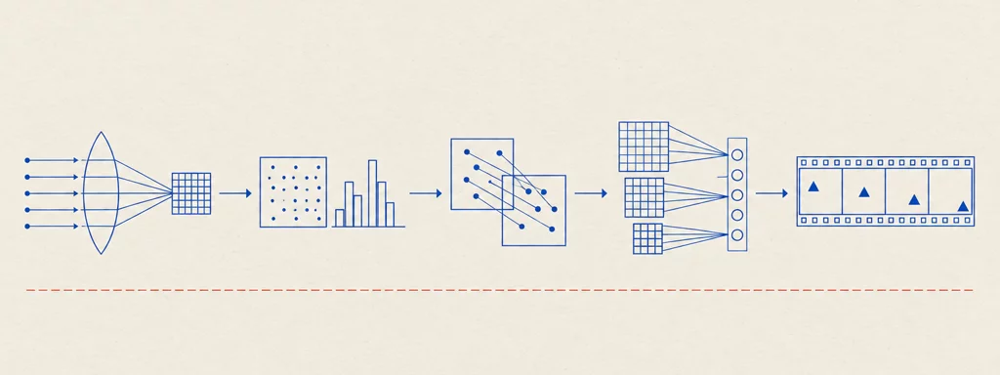

Università di Bologna — Cesena · Prof.ssa Annalisa Franco e Prof. Matteo Ferrara · A.A. 2025/2026
Visione Artificiale e Riconoscimento
15 capitoli56 widget interattivi65 tavole~11 ore di studio

Tavola 00 — Il percorso del corso. I fondamenti (acquisizione e immagini digitali, segmentazione), le feature hand-crafted (colore, tessitura, forma, CBIR), le feature locali con allineamento e localizzazione (trasformazioni 2D, keypoint, bag of words, template matching, Visual SLAM), il deep learning (classificazione, detection, segmentazione semantica) e infine il video (Video Content Analysis) con il progetto d'esame.
Come studiare
I capitoli sono in ordine di dipendenza: leggeteli dall'inizio. Ogni capitolo consolida in un unico luogo tutto ciò che le lezioni dicono su un argomento.
Le tavole sono diagrammi tecnici ricostruiti dalle slide: leggetele come figure, non come decorazione. I widget (simulatori, esploratori, passi interattivi) sono implementazioni funzionanti dei meccanismi: usateli attivamente.
Ogni capitolo termina con «Verifica le tue conoscenze»: domande da esame comprimibili con risposte nel linguaggio esatto del corso.
Il piè di ogni capitolo elenca le dispense da cui proviene; le fonti sono le slide ufficiali del corso, non ridistribuite.